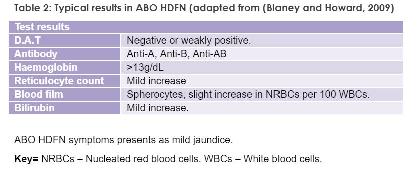

In order to understand the aetiology of HDFN, the role of pregnancy needs to be understood in context to the placenta. During fertilisation, mitosis occurs forming blastocysts, which forms the embryo. As rapid division occurs the cells form a layer of specialised cells called Trophoblasts. Trophoblasts eventually form the outer layer of the placenta where they act as the main placental barrier in exchanging nutrients, waste and other cells from the mother to the foetus, and vice versa.(Zhang et al., 2013)(Mor and Kwon, 2015). During pregnancy, the placenta is the main connection between the mother and foetus. It consists of the Chorion; the outer layer, which protects and nurtures the embryo, and the Decidua, which forms the maternal portion of the uterus lining. (Duttaroy and Basak, 2016) This trophoblastic barrier acts as a defence to the mother’s immune response. It does this by expressing ‘false’ antigens in Major Histocompatibility Complex (MHC) class I proteins. These antigens cleave to the antigen sites on the uterine Natural Killer cells thus evading detection by the mother’s white cells. Human leukocyte Antigens (HLA) are specific proteins, which play this role by binding to the ‘false’ antigens therefore promoting pregnancy. (Bainbridge, 2000); (Dąbrowska et al., 2014) (See figure 1.)
If this barrier breaks for any reason, it causes Fetomaternal Haemorrhage (FMH). FMH is the loss of foetal blood into the mother’s circulation during pregnancy or labour; when trauma occurs. It is unlikely for a bleed of >1ml to occur during pregnancy. However during labour this can reach ≥30ml in about 0.3% pregnancies, particularly when there is a trauma. (Kim and Makar, 2012). Exposure to foetal red cells with antigens foreign to the mother, initiates an IgM response. IgM response involves macrophages in the mother’s circulation identifying the antigen on foetal cell as foreign, such as RhD positive foetal cells in an RhD negative mother. (Figure 2) This breaks down the cell into an RhD peptide and MCH class II complex. This complex produces cytokines, which attract B and T cells to the area, which produces a cocktail of immunological cells, which in turn causes B cells to differentiate into plasma cells and initiating a large amount of RhD antibodies production and replicating the whole mechanism on a larger scale. Antibodies of IgM type are too large to pass the placenta barrier therefore do not cause harm in the first pregnancy. Naïve B cells circulate for a number of years in the mother’s circulatory system, if the body was exposed to the same antigen again, the body would recognise the antigen as foreign much quicker and initiate a response. It does not require T cell stimulation (Dean, 2005; Blaney and Howard, 2009; Kurosaki et al., 2015.). This is known as sensitisation.
There are three main causes of maternal sensitisation leading to foetal red cell destruction. These are ABO incompatibility, Rh incompatibility and other antibody incompatibility.
The ABO blood group system is the most clinically significant because it can have the most profound effect on the transfusion recipient if ABO-incompatible blood is given. In HDFN, 15% of all pregnancies are caused by mother who is group O and the foetus that is group A, B or AB; giving rise to the complement cascade. As Anti A and Anti B of the IgM type is present in the group O mother, they are too large to pass the placenta barrier. If FMH occurs at any stage in pregnancy, this elicits an IgG type response which are much smaller isohemagglutinins; allowing maternal Anti A and B to cross into the placental barrier and causing foetal red cell destruction (see Figure 3). (Boes, 2000; Qureshi et al., 2014).
RhD incompatibility occurs when the mother is RhD negative and the baby is RhD positive. The level of damage is dependent on the volume of bleed, so a few millilitres may not harbour a response at all but a trauma causing a large bleed of over 5ml may illicit a larger immune response. In a mother’s first pregnancy, FMH during pregnancy or labour cause memory B cells to sensitise, which remain in the mother’s circulation for a number of years. In subsequent pregnancies, the B cells activate in the presence of the RhD positive foetal antigens thus causing haemolysis of the foetal red cells (figure 3). (de Haas et al., 2015). Worldwide HDFN due to RhD incompatability remains to be the leading cause particularly where screening programmes are poor or do not exist at all. (Hendrickson and Delaney, 2016)
HDFN can occur due to other antibodies such as Anti-E, Anti-c, Anti-C, Anti-Kell, and antibodies from the Duffy, MNS and Kidd blood group systems, recognising foetal antigens. There can also be a combination such as Anti-c and Anti-E, which can be severe. This type of HDFN occurs due to previous incompatible transfusions for the mother or previous pregnancy in which these antigens were incompatible between mother and child. (Klein and Anstee, 2013). In the western part of the world Kell group of antibodies is the developing cause of HDFN. (Hendrickson and Delaney, 2016)
HDFN affected 1% of all neonates. This was equivalent to 1 in every 2200 births. Antiprophlaxis treatment (discussed later) was introduced in the 1970s, which dropped this figure dramatically and is considered one of the major breakthroughs in medical history. In the UK this is about 500 foetus affected by HDFN or about 16% of pregnancies in Caucasians females. (Qureshi et al., 2014). All RhD negative mothers now receive routine Anti –D prophylaxis treatment as part of their antenatal programme in the NHS. It was estimated that in 2005, without antiprophylactic treatment, 1% of all RhD negative mothers giving birth to RhD positive babies would have been sensitised thus affecting subsequent pregnancies (NICE, 2008).
Severity of HDFN can be measured is dependent on the type of HDFN. The symptoms range from mild to severe and even fatal in some instances. The type of HDFN is diagnosed using a variety of haematology, biochemistry and serology tests.
RhD incompatibility symptoms can be mild to severe. These range from jaundice, hepatosplenomegaly and oedema. Severely affected babies develop anaemia in utero and jaundice within hours of being born.
Hydrops Fetalis is a collection of symptoms, which can occur pre-birth. This can cause severe physical changes in the baby, which can be fatal. While it is a condition in its own right with symptoms ranging from anaemia, oedema and eventually kernicterus, it is quite rare since the introduction of screening methods during pregnancy.
Foetal red cells are removed from circulation due to maternal antibodies breaking down the cells, This limits the level of oxygen available to pump round the foetus’ organs, causing anaemia and pale skin when born. As there is lack of oxygen, this can also cause breathing problems as the kidneys do not have enough oxygen to pump around the body, and are further restricted due to oedema squeezing the organs. Lack of early intervention may develop into lethargy and Opsithotonus, which is due to spasms of the spine and muscles in the back causing backward arching of the head, neck and spine in the neonate. Anaemia can also lead to portal hypertension causing the liver to reduce albumin production. This causes abnormal fluid leakage just beneath the skin known as oedema. (de Haas et al., 2015)
As erythrocytes have a shortened life, the spleen and liver try to compensate for this loss by increasing the productions of red cells, this causes both organs to enlarge as they try to meet demand.
The foetus’ immature liver is unable to breakdown unconjugated bilirubin thus resulting in an accumulation of bilirubin levels in the body, which is visible in the skin and eyes and amniotic fluid. Unconjugated bilirubin can also result in Kernicterus.(Vilambil et al., 2017)
When the kidneys cannot eliminate bilirubin, it is transported to the liver where it binds with albumin giving rise to unconjugated bilirubin. Unconjugated bilirubin is a lipid soluble molecule which can cross the blood brain barrier, this leads to damage to the brain particularly the cerebellum, basal gangilia and neuronal membranes.(Bhutani and Johnson-Hamerman, 2015; Ree et al., 2017). This is usually the last stage of HDFN because the body cannot handle the levels of unconjugated bilirubin therefore it starts to store it instead, if left this can be fatal.
The DAT is a crude test because it dependent on the user to grade the level of reaction from 0 being the weakest to 4 being the strongest; this may vary user to user.
This method is much more accurate but also expensive. It also requires a specialist user to interpret the results, which may not be feasible for regular hospitals. Although there is no standardisation of flow cytometry method, guidelines from British Society for Haematology were issued in 1999, and updated in 2009 on methods of estimation of FMH.(Austin et al., 2009)
RhD negative mothers suspected of carrying RhD foetus’ are given prophylaxis treatment throughout their pregnancy to neutralise the fetal cells before mother’s immune system has chance to become sensitized. Anti-D prophylaxis treatment remains one the success stories in the medical world. Since its introduction in the 1970s mortality rates fell considerably. In so much that the National Health Service in the UK have introduced routine anti-natal anti-D prophylaxis (RAADP) which aims to treat all non-sensitised RhD pregnant women. There is 16% chance of the mother making Anti D, if not treated by antiprophylaxis treatment (Qureshi et al., 2014).
Recommended doses :It is usually given in conjunction with phototherapy so bilirubin levels also return to normal. (NHS, 2015b); (NICE, 2015)
If phototherapy fails or bilirubin is ≥20mg/dL, the baby must undergo an exchange transfusion. This involves removing the baby’s blood through a tube and replacing with donor red cells. This removes bilirubin present in the circulation as well as replacing antibody-coated red cells with antigen negative donor cells(NHS, 2015a). A successful exchange transfusion can treat anaemia, reduce maternal antibody, reduce bilirubin levels and reduce level of sensitised red cells.(Blaney and Howard, 2009)
Rh HDFN effected babies usually require exchange transfusion to reduce bilirubin levels and prevent Kernicterus. In severe cases of jaundice, babies undergo combined therapy such as exchange transfusion and phototherapy.
As discussed earlier the introduction of antiprophylaxis treatment given to RhD negative mothers has had a marked dropped in the number of RhD effected babies. This has led to a further decrease because of the introduction of all RhD negative mothers receiving antiprophylaxis under the NHS. While this has had a positive impact of HDFN affected babies, recent advances in prevention continue to be the main area of research.
One such method is obtaining free foetal cells and extracting the genetic makeup of the foetus readily available to look for abnormalities that may cause problems in the pregnancy.
Cell free foetal DNA(cffDNA) testing is a new test observing DNA obtained from foetal trophoblasts. Foetal trophoblasts are readily available in maternal blood, but can only be detected at around ≥4 weeks of gestation. It is easy to obtain and non-invasive procedure because a routine blood sample can be obtained where DNA is extracted by methods such as PCR.
cFFDNA has been used to obtain information on RhD status of baby; which is useful in an RhD negative woman. It has also been used to identify blood antibody status particularly Kell and human platelet antigen.
At present cFFDNA is not offered as part of routine screening because accuracy of results can very. It is only offered under the advice of consultant haematologist. Testing takes place at International Blood Group Reference Laboratories (IBGRL) in Bristol, England, which is a specialist diagnostic centre for NHS Blood Transfusion Service. (NHS Trust, 2014; (BITS), 2017).
Another reason cFFDNA is not offered in routine laboratories is due to the changing dynamics of the National Health Service. It is increasingly difficult to bring new technology in practice because of cost of equipment, training staff new skills and interpretation and the increasing strain of various other diseases, which have higher mortality rates such as Cardiovascular disease, cancer and Diabetes, which are at the forefront of research and implementation into hospitals. It may be possibly years before a change is seen in this area.
(BITS), T. B. I. f. T. S. (2017) International Blood Group Reference Laboratories. National Health Service. [Online] [Accessed on 26/10/17] http://ibgrl.blood.co.uk/default.htm Aagaard-Tillery, K., Branch, D. W. and Silver, R. M. (2016) Immunologic Disorders in Pregnancy. online: Obgyn Key. [Online] [Accessed on 10/10/17] https://obgynkey.com/immunologic-disorders-in-pregnancy/ Austin, E., Bates, S. and de Silva, M. H., D.Lubenko, A.Rowley, M.Scott, M.Thomas, E.White, J.Williams, M. (2009) Guidelines for the Estimation of Fetomaternal Haemorrhage. British Society of Haematology. [Online] [Accessed on 11/10/17] http://www.b-s-h.org.uk/guidelines/guidelines/the-estimation-of-fetomaternal-haemorrhage/ Bainbridge, D. R. (2000) 'Evolution of mammalian pregnancy in the presence of the maternal immune system.' Reviews of Reproduction, 5(2) pp. 67-74. Bhutani, V. K. and Johnson-Hamerman, L. (2015) 'The clinical syndrome of bilirubin-induced neurologic dysfunction.' Seminars in fetal & neonatal medicine, 20(1) pp. 6-13. Bio-rad. (2017) DC-Screening I. [Online] [Accessed on 26/10/17] http://www.bio-rad.com/en-uk/product/dc-screening-i?pcp_loc=catprod Blaney, K. D. and Howard, P. R. (2009) Basic and applied concepts of immunohematology, 2nd ed. St. Louis, Mo: Mosby. Boes, M. (2000) 'Role of natural and immune IgM antibodies in immune responses.' Molecular Immunology, 37(18), 2000/12/01/, pp. 1141-1149. BTS Transport, N. B. a. (2017) Antenatal Reference Service. [Online] [Accessed http://hospital.blood.co.uk/diagnostic-services/red-cell-immunohaematology/antenatal-reference-services/ de Haas, M., Thurik, F. F., Koelewijn, J. M. and van der Schoot, C. E. (2015) 'Haemolytic disease of the fetus and newborn.' Vox Sanguinis, 109(2) pp. 99-113. Dean, L. (2005) Blood Groups and Red Cell Antigens [Internet]. Chapter 4 ed., Hemolytic disease of the newborn.: Bethesda (MD): National Center for Biotechnology Information (US). Direct Antiglobulin Test and Elution Study. (2016). pp. 86-100. http://www.austincc.edu/mlt/bb/bbLab%208_9%20DAT_Elution.pdf: Austin Community College. Duttaroy, A. K. and Basak, S. (2016) Human Placental Trophoblasts: Impact of Maternal Nutrition. Boca Raton: Taylor and Francis Group. Dąbrowska, M., Janowski, T. and Rapacz-Leonard, A. (2014) 'Major Histocompatibility Complex I Mediates Immunological Tolerance of the Trophoblast during Pregnancy and May Mediate Rejection during Parturition.' Hindawi, p. 11. Ghatori, B. (2014) Doppler in pregnancy.: [Online] [Accessed on 10/10/17] https://www.slideshare.net/bhartigahtori/doppler-in-pregnancy-39805535 Gielezynska, A., Stachurska, A., Fabijanska-Mitek, J., Debska, M., Burzynska, B., Rawa, K. and Pawlik, K. (2014) 'Feto-maternal haemorrhage assessment in a woman with a large population of red blood cells containing fetal haemoglobin.' Ginekol Pol, 85(8), Aug, 2014/09/16, pp. 614-618. Hendrickson, J. E. and Delaney, M. (2016) 'Hemolytic Disease of the Fetus and Newborn: Modern Practice and Future Investigations.' Transfusion Medicine Reviews, 30(4), Oct, pp. 159-164. Kim, Y. A. and Makar, R. S. (2012) 'Detection of fetomaternal hemorrhage.' American Journal of Hematology, 87(4) pp. 417-423. Klein, H. G. and Anstee, D. J. (2013) Mollison's blood transfusion in clinical medicine. 12th ed., Hoboken: Wiley. Knipe, H. (2017) Cordocentisis. Radiopedia. [Online] [Accessed on 10/10/17] https://radiopaedia.org/articles/cordocentesis Kumpel, B. M., MacDonald, A. P., Bishop, D. R., Yates, A. F. and Lee, E. (2013) 'Quantitation of fetomaternal haemorrhage and F cells in unusual maternal blood samples by flow cytometry using anti-D and anti-HbF.' Transfusion Medicine, 23(3) pp. 175-186. Kurosaki, T., Kometani, K. and Ise, W. (2015) 'Memory B cells.' NATURE REVIEWS IMMUNOLOGY, 15(3) pp. 149-159. Labtests. (2014) Direct Antiglobulin Test. Clinical Biochemistry and Laboratory Medicine. [Online] [Accessed on 10/10/17] http://labtestsonline.org.uk/understanding/analytes/antiglobulin-direct/tab/test/ Latendre, P. (2017) Introduction to Rh system. [Online] [Accessed on 09/10/17] https://sites.ualberta.ca/~pletendr/tm-modules/rh/70rh-intro.html McManus, A. (2017) 'Auto Immune Haemolytic Anaemia' [Powerpoint presentation] Module: Transfusion 2. Availble at: https://moodle.mmu.ac.uk/course/view.php?id=86143. NHS Blood and Transport Service. (Accessed: 20/10/17) Moise, K. (2008) 'The usefulness of middle cerebral artery Doppler assessment in the treatment of the fetus at risk for anemia.' American Journal of Obstetrics & Gynecology, 198(2) pp. 161.e161-161.e164. Murray, N. A. and Roberts, I. A. G. (2007) 'Haemolytic disease of the newborn.' Archives of Disease in Childhood. Fetal and Neonatal Edition, 92(2) pp. F83-F88. NHS. (2015a) Newborn jaundice. NHS. [Online] [Accessed on 11/10/17] http://www.nhs.uk/Conditions/Jaundice-newborn/Pages/Treatment.aspx NHS. (2015b) Rhesus disease. [Online] [Accessed on 11/10/17] http://www.nhs.uk/Conditions/Rhesus-disease/Pages/Treatment.aspx NHS. (2016) Amniocentesis. National Health Service. [Online] [Accessed on 10/10/17] http://www.nhs.uk/Conditions/Amniocentesis/Pages/Introduction.aspx NHS Trust, G. O. S. H. f. C. N. F. (2014) The NHS Rapid Project. [Online] [Accessed on 26/10/17] http://www.rapid.nhs.uk/about-rapid/ NICE. (2008) Routine antenatal anti-D prophylaxis for women who are rhesus D negative.: NICE. [Online] [Accessed on 26/10/17] https://www.nice.org.uk/guidance/ta156/chapter/2-Clinical-need-and-practice NICE. (2015) Intravenous Immunoglobulin therapy for HDFN.: [Online] [Accessed on 27/10/17] https://www.blood.gov.au/system/files/documents/2015-session-6-6-rebecca-davidson-ivig-in-hdfn-consent-yes.pdf Owen, J. A., Kindt, T. J., Stranford, S. A., Kuby, J. and Punt, J. (2013) Kuby immunology, Seventh edition, International edition. New York: W.H. Freeman. Parker, V. and Tormey, C. A. (2017) 'The Direct Antiglobulin Test: Indications, Interpretation, and Pitfalls.' Archives of Pathology & Laboratory Medicine, 141(2), 2017/02/01, pp. 305-310. Qureshi, H., Massey, E., Kirwan, D., Davies, T., Robson, S., White, J., Jones, J. and Allard, S. (2014) 'BCSH guideline for the use of anti-D immunoglobulin for the prevention of haemolytic disease of the fetus and newborn.' Transfusion Medicine, 24(1) pp. 8-20. Ree, I. M. C., Smits-Wintjens, V., van der Bom, J. G., van Klink, J. M. M., Oepkes, D. and Lopriore, E. (2017) 'Neonatal management and outcome in alloimmune hemolytic disease.' Expert Review of Hematology, 10(7) pp. 607-616. Vilambil, S., Dharmadas, M., Usha, K. K. C., Shahulhameed, S. P., James, C., Sasikala, A. P., John, S. and Rajagopal, V. (2017) 'CLINICAL PROFILE OF MATERNAL ANTIBODY-MEDIATED ABO HAEMOLYTIC DISEASE OF FOETUS AND NEWBORN.' Journal of Evolution of Medical and Dental Sciences-Jemds, 6(68), Aug, pp. 4853-4858. Zhang, S., Lin, H., Kong, S., Wang, S., Wang, H., Wang, H. and Armant, D. R. (2013) 'Physiological and molecular determinants of embryo implantation.' Molecular aspects of medicine, 34(5), 01/02, pp. 939-980.